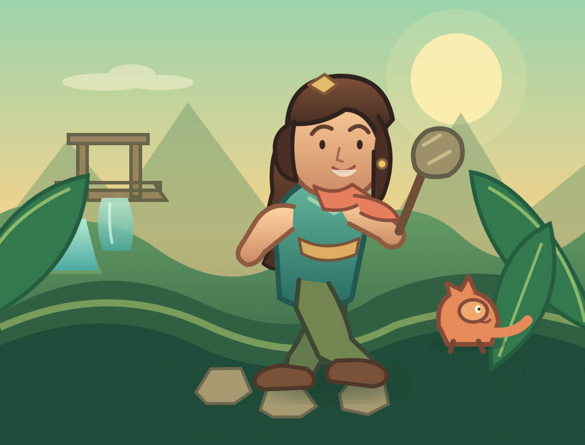

PREHISTORIA NIE JEST GOTOWA NA ASIĘ
EPOKA miażdżenia
Trzy krainy, sekrety pod stopami i bossowie, którzy szybko pożałują spotkania z patelnią. Prehistoria właśnie dostała nowy problem.

WYBIERZ SWOJĄ TRASĘ
Mapa przygody
CHWILA ODDECHU
Przerwa na jagody
Wynik zapisze się po ukończeniu etapu. Zebrane sekrety są zapisywane od razu.
POZIOM UKOŃCZONY
Ale lądowanie!
Udało się!
DOPASUJ ROZGRYWKĘ
Ustawienia
Ustawienia i postęp są przechowywane lokalnie na tym urządzeniu.
KRÓTKA INSTRUKCJA
Jak grać?
Przesuwaj drążek w lewo lub prawo. Im dalej od środka, tym szybciej biegniesz.
Uderzaj patelnią przed sobą. Trafiaj z odpowiedniej odległości i nie czekaj, aż wróg podejdzie.
Przeskakuj szczeliny, pułapki i przeciwników.
W powietrzu uderz w ziemię. Rozbijaj kruche skały i ogłuszaj wrogów.
Krótka szarża. Używaj do szybkiego przemieszczania i rozbijania słabych przeszkód.
Przytrzymaj ATAK, aby wykonywać kolejne zamachy. I/K + ATAK kieruje ciosem; na ekranie dotykowym Asia automatycznie podniesie broń, gdy nietoperz znajdzie się blisko nad nią. Uderzaj w podejrzane ślady na ziemi albo miażdż je z powietrza, aby odkrywać skrytki. Przeciwnicy zostawiają kości i czasem jedzenie: 6 fragmentów skamieliny daje dodatkowe serce, a owoc leczy. Maczuga zadaje mocniejsze obrażenia, a kościany bumerang razi z dystansu.